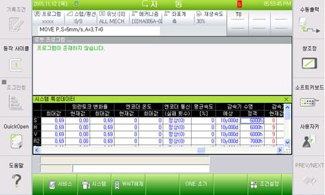
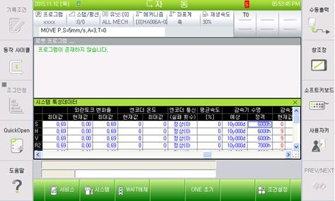
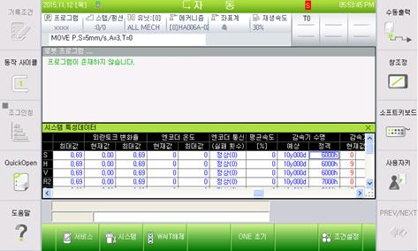

기존 에러코드: E0119 (○축) 모터 과부하
1.1.80.1. 개요
모터 또는 구동장치가 무리하게 동작되고 있습니다. 모터 또는 구동장치가 설정치 보다 무리하게 동작하게 되면, 서보보드는 에러를 감지하고 로봇을 정지시킵니다.
이 에러는 과부하 상태이면서 엔코더 온도가 저온일 때 발생합니다.
통상 저온시(엔코더 5℃이하)는, 구리스 점성에 의한 마찰성분이 증가해서 정상시보다 부가적인 토크가 필요하므로 로봇을 고속으로 동작시키면 본 에러가 발생 할 수 있습니다.
1.1.80.2. 원인 및 점검방법
|
(1) 엔코더 온도가 정상치(약 15℃ 이상)가 될 때까지 저속구동(재생속도 30% 이하) 시킨 후, 정상속도로 재 가동하십시오 |
(1) 엔코더 온도가 정상치(약 15℃ 이상)가 될 때까지 저속구동(재생속도 30% 이하) 시킨 후, 정상속도로 재 가동하십시오
